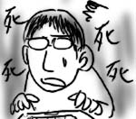
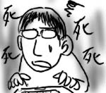
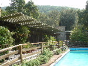
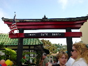
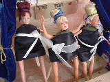
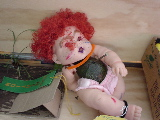
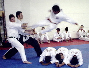
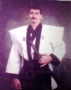

最近，ことえり(MacOSの日本語変換IM)の調子がおかしくて，とにかくいろいろとうまく変換できないんです．ちょっと例を挙げると…
- りょうしん→両死ん
- あくしつ→悪死津
- 〜ました→真死他
- おこしそう→お小死そう
…と，すべての誤変換に死の匂いが漂っています．おもしろいが憂鬱だ．
~/Library/Preferencese/com.apple.JapaneseAnalysis を捨てると直りますけどね．
最近，ことえり(MacOSの日本語変換IM)の調子がおかしくて，とにかくいろいろとうまく変換できないんです．ちょっと例を挙げると…
…と，すべての誤変換に死の匂いが漂っています．おもしろいが憂鬱だ．
~/Library/Preferencese/com.apple.JapaneseAnalysis を捨てると直りますけどね．
同僚のJamesが菓子を大量に持ってきたので，みんなでお裾分けを強要．みんなチョコとかを選ぶ中，僕がチョイスしたのは所謂"おかき"でした．
パッケージには「かりかりごおいしい!!」と書かれています．「じかんすいなもちごめ」とも書かれています．いったい何から出来ていますか！
他にも読めない漢字がいっぱいです．まだ開封していません．
同僚のToddに誘われてアボカドフェスティバルに出かけました．方向としては前回行ったSolvangと同じ，Toddは彼女連れで登場．でも今回，僕は運転手ではありません．
途中でなぜかToddの母親の家に寄ることになり，山奥へと向かいます．畑を横切って，小さな沢を越え，私道を入り込んでいきます．そして到着．
むっちゃ豪邸ですよ！！
ここで遅めの昼ご飯をご馳走になることに．日本語でも苦手なのに英語でどうしたらいいのか．
お客さんとして堂々としていることが出来ない性分なので，何か手伝えることがないかとウロチョロしていたら，茶でも飲んでてよ，と緑茶「Zen」を出されました．あと「Zen」の箱庭セットも見せてもらいましたよ．Zen大人気．
そしてみんなでパティオで会食．パティオには，ナイスなテーブルセットの他に，バーベキューグリルや便器が置かれています．…なぜ便器が．
料理は大変美味しかったです．ベビーキャベツとアスパラの塩茹でとかね．
昼ごはんを終えると，今度こそアボカドフェスティバルに出発．小規模な通りを通行止めにして行われる小さなお祭りですが，結構な人出．謎の「Torii Gate Shops」が僕を出迎えてくれます．
大きなたらいでグアカモレ(アボカドを潰して調味料を混ぜた物)を作っているのを横目に，みんなでアボカドアイスを試食．あーこれは…．基本的に塩味、そして後味が胡椒味です．…辛かったです(ダブルミーニング)．
どうにか毒アイスを飲み込んで，アボカドの展示会に足を運びます．展示会では、今年最大のアボカドを競うコンテストや，アボカドで作った人形コンテストなどが行われています．問題は人形の方です．
 怖っ！呪われる！ちなみに左の黒バービーが１位でした．やっぱりこの国は謎に満ちています．
一通り祭りを堪能した後は，再びToddの母親と合流するということで，Toddの母親が通う道場へ向かいます．Toddの母親はHapkido(ハップ気道?)なる格闘技を習っているそうです．そんな格闘技見たことも聞いたこともありませんが，なんかキックボクシングの一派みたいですよ．
道場では，誰かが黒帯を取ったとかで，簡単なPotLuck(持ち寄り料理)パーティが行われていました．道場の壁には，黒帯試験の写真が飾られています．
これは一体何の試験ですか！下の3人が可哀想すぎます．なんにせよ，おめでとうMike．
しばらくは道場にいるというので，壁に飾られた「氣」という掛け軸の意味などを説明していると，Toddの母親がいろいろと写真を見せてくれました．そして衝撃の道場Masterの写真が！
駄目だ！ツッコミどころが多すぎてどこからつっこんでいいのか分かりません！
こういう時，日本人でよかったと心から思います．